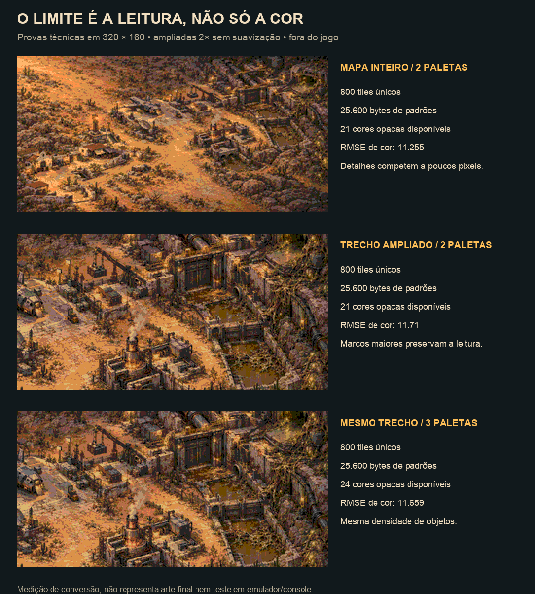
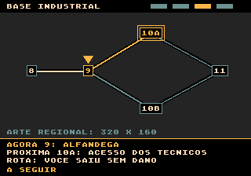

Plaguefall / Estudo técnico / Somente investigação
O mapa cabe.
A composição precisa respirar.
Recomendação: quatro regiões ilustradas em 320 × 160, marcos maiores e caminhos desenhados por cima. O esquema global mantém o jogador situado.
O conceito inteiro reduzido perde leitura. Texturas pequenas continuam disputando espaço mesmo com mais cores. Fiz cinco provas offline com o quantizador do próprio projeto e conferi o orçamento real de VRAM. Nenhum recurso foi instalado no jogo.
800 tiles / região25.600 bytes de padrões, uma região residente por vez. Duas paletas de arte como ponto de partida.
4 mapas / 4 bifurcaçõesComunidade, evacuação, base industrial e ninhos. Os 20 locais e as convergências permanecem.
~110,5 KiB brutosEstimativa para quatro regiões e padrões de interface, antes de código, alinhamento e padding da ROM.
Provas de redução e paleta
As imagens abaixo são conversões técnicas da pintura existente, ampliadas 2× sem suavização. Não são a arte final nem uma captura do emulador. Cada célula de 8 × 8 usa apenas um banco de paleta RGB333.

Adicionar a terceira paleta reduziu o erro RGB do recorte de 11,710 para 11,659 neste quantizador. Uma seleção manual de cores pode melhorar o resultado; o ganho de escala e a simplificação dos materiais continuam necessários. Não há dithering adicional nessas provas.
O que preservar
Igreja e porta azul; nave de resgate; parabólica; feixes de dutos; comporta; massas de ovos e quitina. Reduzir pedras soltas, cabos finos, rachaduras e pontos de brilho. Direção proposta: marcos de aproximadamente 32–48 px e terreno mais calmo junto às rotas. Uma terceira paleta pode atender a infestação se a arte final justificar.
Layout com a fonte real do projeto
Croqui de interface em 320 × 224, ampliado 2×. A área cinza marca a futura pintura: 16 px de cabeçalho, 160 px de mapa e 48 px de informação. As formas são apenas um esquema de posições; não representam a arte final.

O ponteiro fica na fase 9 até confirmar a viagem. A próxima rota tem contorno diferente. Os nomes completos ficam no rodapé; o mapa global usa pontos e ramificações sem escrever vinte nomes minúsculos.
Medidas dos cinco testes
| Prova | Pixels | Bancos | Tiles únicos | Bytes de padrões |
|---|
| mapa-inteiro-2pal | 320 × 160 | 2 | 800 | 25600 |
| trecho-base-2pal | 320 × 160 | 2 | 800 | 25600 |
| trecho-base-3pal | 320 × 160 | 3 | 800 | 25600 |
| panoramico-512-2pal | 512 × 160 | 2 | 1280 | 40960 |
| panoramico-640-2pal | 640 × 160 | 2 | 1600 | 51200 |
Todos os padrões dessas provas são distintos, mesmo admitindo espelhamento. Os panoramas de 512 e 640 px ultrapassam o orçamento conservador com a fonte e a interface preservadas. Para usá-los, precisaríamos de arte modular, redução de padrões ou carregamento por partes.
Cuidados encontrados no código
A arte pode emprestar as reservas dos gráficos da fase enquanto o combate está parado. Ao sair, será necessário restaurar paletas e chão e invalidar o cache dos inimigos. O estado atual do mapa também esconde os sprites a cada quadro: um ponteiro feito como sprite sumiria sem integrar essa ordem. A primeira versão pode usar marcadores no plano de tiles; a viagem suave exige controle próprio de sprite.
A carga da imagem ocorre na transição; depois, somente o halo e o marcador precisam de atualização. Não há motivo para redesenhar ou reenviar toda a pintura a cada quadro. Isso ainda precisa ser medido com áudio, NTSC e PAL quando uma região for integrada.